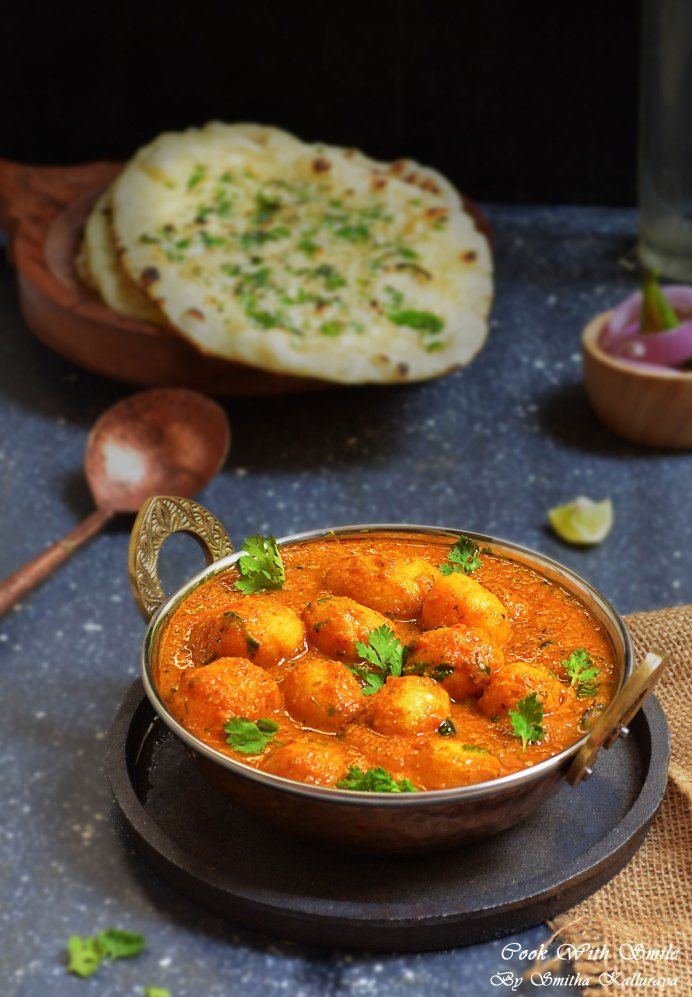
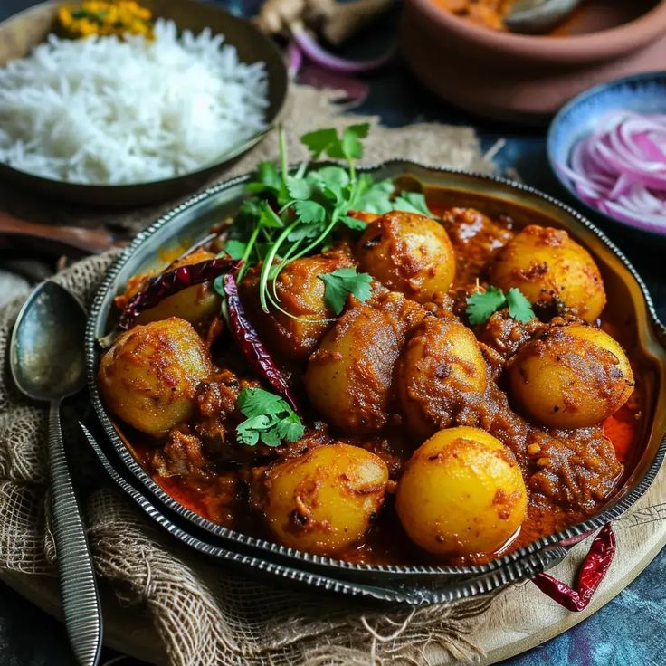

📝 INGREDIENTS
For Luchi:
- 2 cups maida
- 1 tbsp ghee or oil
- A pinch of salt
- Water
- Oil (for deep frying)
Bengali Aloo Dum:
- 4-5 medium potatoes (boiled, peeled & halved)
- 1 tomato (chopped or pureed)
- 1 tsp ginger paste
- 2 tbsp yogurt (whisked)
- ½ tsp turmeric powder
- 1 tsp red chili powder
- 1 tsp coriander powder
- ½ tsp garam masala
- ½ tsp sugar
- Salt to taste
- 2 tbsp mustard oil
For Tempering:
- 1 bay leaf
- 1 tsp cumin seeds
- 1–2 dried red chilies
- A pinch of hing
👩🍳 Recipe

- For Luchi:
- -Mix maida, salt, and ghee/oil.
- -Add water little by little to form a soft, smooth dough.
- -Rest the dough for 20–30 minutes under a damp cloth.
- -Divide into small balls and roll them out into small circles (not too thin).
- -Heat oil in a deep pan. Once hot, deep fry the luchis one at a time, pressing lightly with a slotted spoon so they puff up.
- -Fry till light golden. Drain on paper towels.
- For Aloo Dum:
- -Heat mustard oil in a pan until it starts to smoke slightly.
- -Add cumin seeds, bay leaf, red chilies, and hing.
- -Add ginger paste and sauté till raw smell goes.
- -Add tomato puree, turmeric, red chili, and coriander powder. Cook till oil starts separating.
- -Add yogurt slowly while stirring (to prevent curdling).
- -Add the boiled potatoes and coat them well in the masala.
- -Add a little water to make gravy (as thick or thin as you like).
- -Add salt, sugar, and simmer for 8–10 minutes.
- -Finish with a sprinkle of garam masala and serve hot.